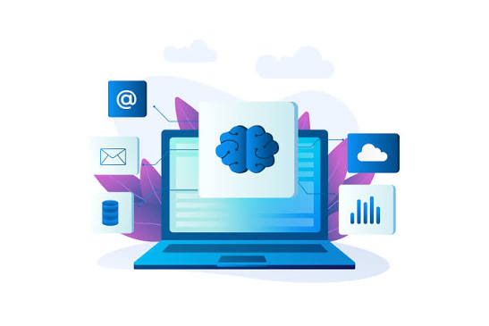

El aprendizaje no supervisado es una rama del aprendizaje automático que permite a una computadora encontrar patrones y relaciones en un conjunto de datos sin utilizar etiquetas o respuestas correctas previamente definidas.
El sistema analiza la información y busca características similares para organizar los datos y descubrir información que puede ser útil para resolver diferentes problemas.
El agrupamiento, también conocido como clustering, es una técnica que consiste en organizar los datos en grupos según sus características y similitudes.
Por ejemplo, una tienda puede agrupar a sus clientes según sus compras y preferencias. Así puede conocer diferentes tipos de consumidores sin tener que clasificarlos previamente.
La detección de patrones permite encontrar relaciones, comportamientos frecuentes o características similares dentro de grandes cantidades de información.
La detección de anomalías consiste en identificar datos que se comportan de manera diferente a lo habitual. Por ejemplo, un banco puede analizar operaciones para encontrar movimientos financieros sospechosos.
| Aplicación | Utilidad |
| Segmentación de clientes | Agrupa consumidores con gustos y hábitos similares. |
| Detección de fraudes | Identifica operaciones que se alejan del comportamiento habitual. |
| Análisis de documentos | Organiza textos según sus temas y características. |